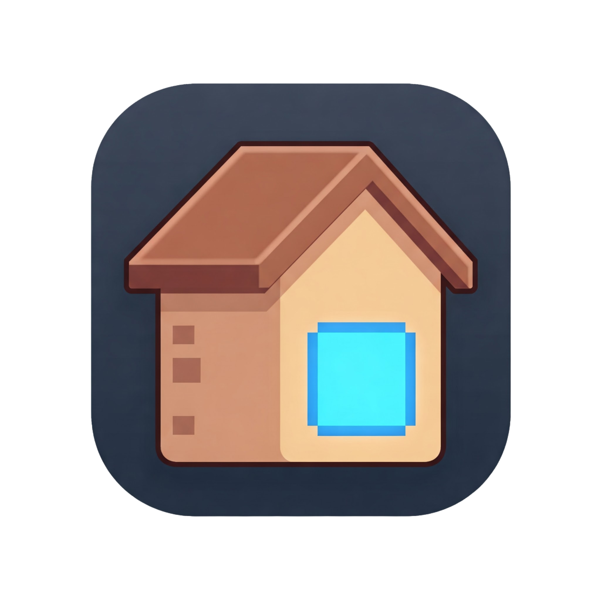

AlwaysGoHome Extension

Set your preferred new tab homepage:
Use HTTP instead of HTTPS
Only use HTTP for local networks or trusted sites
Redirect only once per browser launch
When checked, new tabs will only redirect to your homepage the first time after starting your browser
Save